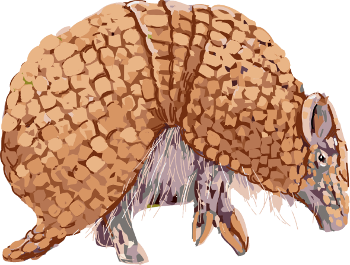

@@include('include_html/header.html')
<div class="main__wrapper container">
  <!-- Конец шапки -->
  <div class="main-content">
    <div class="nf">
      <div class="nf__left">
        
        
      </div>

      <div class="nf__right">
        <div class="nf__title">Страница не найдена</div>
        <span class="nf__text">Попробуйте посмотреть на главной или просто позвоните нам по телефону</span>
        <a href="/folder/" class="btn btn-green nf__btn">Вернуться на главную</a>
      </div>
    </div>
  </div>
  @@include('include_html/footer.html')